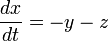
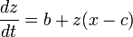

The Rössler attractor is the attractor for the Rössler system, a system of three non-linear ordinary differential equations. These differential equations define a continuous-time dynamical system that exhibits chaotic dynamics associated with the fractal properties of the attractor. Some properties of the Rössler system can be deduced via linear methods such as eigenvectors, but the main features of the system require non-linear methods such as Poincaré maps and bifurcation diagrams. The original Rössler paper says the Rössler attractor was intended to behave similarly to the Lorenz attractor, but also be easier to analyze qualitatively. An orbit within the attractor follows an outward spiral close to the x,y plane around an unstable fixed point. Once the graph spirals out enough, a second fixed point influences the graph, causing a rise and twist in the z-dimension. In the time domain, it becomes apparent that although each variable is oscillating within a fixed range of values, the oscillations are chaotic. This attractor has some similarities to the Lorenz attractor, but is simpler and has only one manifold. Otto Rössler designed the Rössler attractor in 1976, but the originally theoretical equations were later found to be useful in modeling equilibrium in chemical reactions. The defining equations are:


Rössler studied the chaotic attractor with a = 0.2, b = 0.2, and c = 5.7, though properties of a = 0.1, b = 0.1, and c = 14 have been more commonly used since.
Text courtesy of Wikipedia under the CC Share-Alike License.